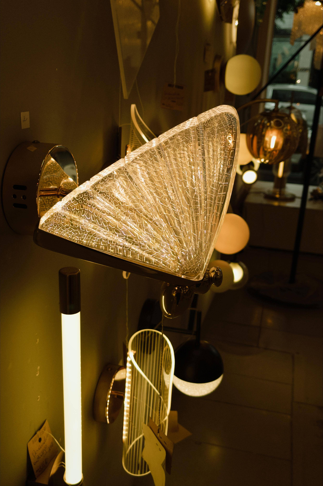
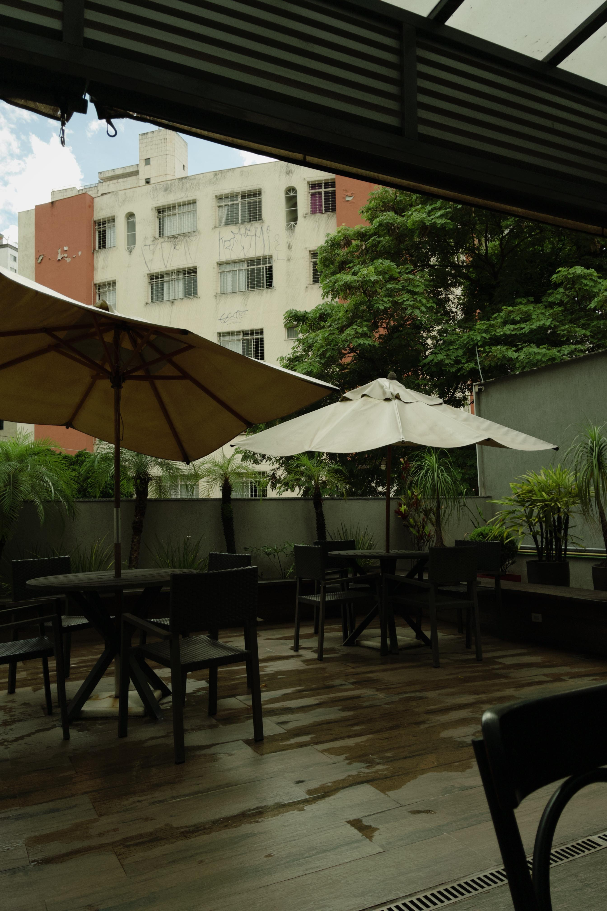

Me chamo Maria Eduarda, mas muitos me conhecem como Madu.
Sempre fui apaixonada pelos detalhes, pelas histórias e pela forma como um simples vídeo pode fazer alguém sentir algo.
Acredito que o conteúdo mais bonito é aquele que tem verdade, personalidade e propósito.
Estou construindo meu caminho na captação de conteúdo com um olhar criativo, delicado e humano.
Não quero apenas gravar vídeos: quero ajudar marcas e pessoas a mostrarem quem realmente são.
Vídeos autênticos que mostram a essência do seu negócio.
Conteúdos dinâmicos, criativos e alinhados às tendências.
Bastidores, rotina e momentos que aproximam seu público.
Ideias para transformar momentos simples em conteúdos que conectam.
Porque pessoas se conectam com pessoas e não apenas com produtos.



Conteúdo autêntico, criativo e pensado para gerar conexão.
Falar comigo